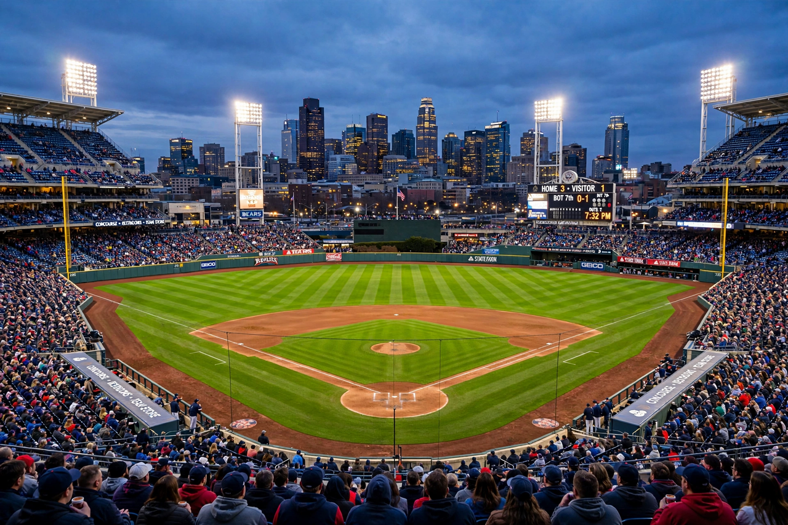

From Wikipedia, the free encyclopedia
| Major League Baseball | |
|---|---|
 A Major League ballpark at dusk with the field lit and stands full | |
| Founded | 1903 (National League 1876; American League 1901) |
| Teams | 30 (29 United States, 1 Canada) |
| Most titles | New York Yankees (27 World Series) |
| Season | 162 games, late March – September; playoffs in October |
| Championship | World Series |
Major League Baseball (MLB) is the highest level of professional baseball in North America and the oldest of the major professional sports leagues in the United States. It comprises 30 teams divided equally between the National League (NL), founded in 1876, and the American League (AL), founded in 1901. The two leagues have operated under a single organisation since 2003, with mostly harmonised rules — the designated hitter, long an American League feature, became universal in 2022. Each team plays a 162-game regular season, and the champions of the two leagues meet each October in the World Series.
The NL and AL champions first met in a World Series in 1903. The early decades were shaped by stars such as Babe Ruth, whose home-run hitting rescued the game's popularity after the 1919 Black Sox scandal. Jackie Robinson's debut for the Brooklyn Dodgers in 1947 ended segregation in the majors. Free agency arrived in the 1970s, transforming player salaries, and the 1994 strike cancelled that year's World Series. The late 1990s home-run race and subsequent steroids scandal, and the 2017 Houston Astros sign-stealing scandal, each reshaped public trust in turn.
The New York Yankees are the most successful franchise with 27 championships, followed by the St. Louis Cardinals and the Oakland Athletics and Boston Red Sox among the most decorated. Historic rivalries include Yankees–Red Sox and Dodgers–Giants. MLB draws on talent worldwide, with star players from Japan, Korea and Latin America — most prominently two-way Japanese star Shohei Ohtani of the Los Angeles Dodgers, champions in 2020 and 2024. The league's annual All-Star Game is held each July.
Categories: Major League Baseball | Baseball leagues in the United States | Sports leagues established in 1903